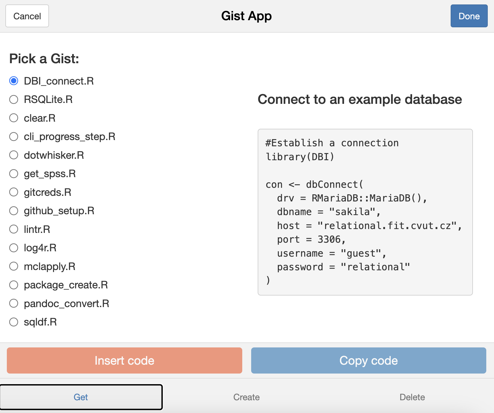

The gist package provides a set of functions to work with GitHub Gist. It allows you to copy, create, and delete gists via the GitHub API. Moreover, it comes with an R Studio addin - a shiny app - to manage your Gists.
Installation
You can install the development version of gist like so:
devtools::install_github("edgar-treischl/gist")In order to connect with the Git Hub API, you need to provide a GitHub API token (names as: github_api) with the keyring package. Use the key_set() function to store your token safely:
#Save GitHub API token as github_api
keyring::key_set(service = "github_api")Workflow
There is no need to learn how the package works, because it comes with an R Studio addin that let you manage Gists. Go to the addin menu or use the following code to open the gist app. The app shows a list with your gist files and a preview of the code. Pick a gist and copy or insert the code. Furthermore, the app has tabs to create and delete gists as well.

If you want to interact via R, you can use the following functions. Create a new Gist via:
#Create a gist
gist_create(name = "A_Test.R",
code = '#Test
print("Hello world")',
description = "Test Gist")
#> ✔ Insert A_Test.R
#> [1] "TRUE"Get a gist via:
#gistfiles lists all files and returns names and ids
gist_get(filename = "A_Test.R")
#> ✔ Copied A_Test.R from your GitHub account.Set the raw parameter to TRUE in case you need the raw character vector. Finally, let us delete a gist. Therefore, you need to inspect your gists to get to know the id of a gist.
#gistFiles lists all files and returns names and ids
mygists <- gist::gistFiles()
mygists |> head()
#> file id
#> 1 A_Test.R 92fa4eeda00996058731e056c31e4535
#> 2 attachment.R 0daa7241e752a4c4f77ad0085b9d7694
#> 3 clear.R 27a596e3c9cf3b533936e771a01d840f
#> 4 cli_progress_step.R c0a0c0485afd7b0b48101e86a5dd1b3c
#> 5 dbi::dbConnect.R 330939119e04086d3a68a3c7662ad5a0
#> 6 dotwhisker.R 725f9b302453c9456e6dcc546760a0d4To delete a gist, give the id the gist_delete() function.
#Delete a gist
gist::gist_delete(id = mygists$id[1])
#> ✔ Deleted id: 92fa4eeda00996058731e056c31e4535
#> [1] "TRUE"